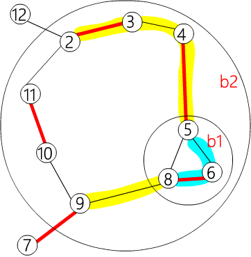

General weight match
本页从一般图最大权完美匹配到一般图最大权匹配（最大权匹配可以通过增加零边变成最大权完美匹配）．
预备知识
花（blossom）
一般图匹配和二分图匹配不同的是，图可能存在奇环．可以将偶环视为二分图．
带花树算法（Blossom Algorithm）的处理方式时是遇到奇环就把它缩成一个 花（Blossom），并把花中所有的点设为偶点．既然花上的点都可以成为偶点，那么可以把整个花直接缩成一个偶点．注意，一个花可以包含其它花．
这也可以变成线性规划和对偶问题，但是要对花进行一些处理．
顶标（vertex labeling）和等边（Equality Edge）
定义 $z_u$ 是点 $u$ 的顶标（vertex labeling），与 $KM$ 算法中定义的顶标含义相同．定义边 $e(u,v)$ 为 "等边" 当且仅当点 $u$ 和点 $v$ 的标号和等于边 $e$ 的权值（$z_u + z_v = w(e)$），此时边的标号 $z_e = z_u + z_v − w(e) = 0$．
一般图最大权完美匹配的线性规划
定义
因为一朵花最少有三个点，缩花后成为一个点．设 $O$ 为大小为 $≥3$ 奇数的集合的集合（包含所有花），$\gamma(S)$ 表示 $S$ 集合中的边．
$$ \begin{aligned} & \text{设} S\subseteq V \ & \gamma(S)={(u,v)\in E:u\in S,v\in S} \ & O={B\subseteq V:|B|\text{是奇数且}|B|\geq3} \ \end{aligned} $$
对偶问题
???+ note "原问题" $$ \begin{aligned} & \max\sum_{e\in E}w(e)x_e \ & \text{限制：} \ & x(\delta(u))=1:\forall u\in V \ & x(\gamma(B))\leq\lfloor\frac{|B|}{2}\rfloor:\forall B\in O \ & x_e\geq0:\forall e\in E \ \end{aligned} $$
然后通过原始对偶（Primal-Dual）将问题转换为对偶问题．
???+ note "对偶问题" $$ \begin{aligned} & \min\sum_{u\in V}z_u+\sum_{B\in O}\left\lfloor\frac{|B|}{2}\right\rfloor z_B \ & \text{限制：} \ & z_B\geq0:\forall B\in O \ & z_e\geq0:\forall e\in E \ & \text{设} e=(u,v)，\text{这里} \ & \begin{array}{lll} z_e & = & z_u + z_v - w(e) + \sum_{\substack{B \in O \ u,v \in \gamma(B)}} z_B \end{array} \end{aligned} $$
$x_e=1$ 的边是匹配边，$x_e=0$ 的边是非匹配边．和二分图一样，我们必须满足 $x_e\in{0,1}:\forall e\in E$．因此必须在最大权完美匹配的时候，让所有匹配边都是 等边 的．
和二分图不同的是，一般图多了 $z_B$ 要处理．下面考虑 $z_B$ 什么时候大于 $0$．
可以看出，尽量使 $z_B=0$ 是最好的做法，但在不得已时还是要让 $z_B>0$．在 $x(\gamma(B)) = \left\lfloor \dfrac{|B|}2 \right\rfloor \text{且} x(\delta(B)) = 1$ 时，让 $z_B>0$ 即可．因为除了在这种情况下，$z_B>0$ 是无意义的．
根据互补松弛条件，有以下的对应关系：
-
对于选中的边 $e$，必有 $z_e=0$．
$$ x_e>0 \longrightarrow z_e=0,\quad \forall e\in E $$
-
对于选中的集合B，$z_B>0 \longrightarrow x(\gamma(B))= \left\lfloor \dfrac{|B|}2 \right\rfloor$，即所有 $z_B>0$ 的集合 $B$，都被选了集合大小一半的边，也即集合 $B$ 是一朵花，选中花中的一条边进行增广．同时，我们加入一个条件：$x(\delta(B))=1$，即只有花 $B$ 向外连了一条边的时候，$z_B>0$ 才是有意义的．
$$ z_B>0 \longrightarrow x(\gamma(B))=\left\lfloor\frac{|B|}2\right\rfloor, x(\delta(B))=1\quad \forall B\in O $$
以「等边」的概念，结合之前的带花树算法：用「等边」构成的增广路不断进行扩充，由于用来扩充的边全是「等边」，最后得到的最大权完美匹配仍然全是「等边」．
处理花的问题
当遇到花的时候，要将它缩成一个偶点．将花中所有点都设为偶点，并让它的 $z_B=0$．
由于缩花后会把花保存起来，直到满足某些条件才会拆开，所以不能用之前的方法记录花．
如果没有特殊说明，之前提到的点，都包含缩花形成的偶点．
由于花也有可能缩成点被加入队列中，并且花的数量是不固定的，因此不能像之前一样枚举每个点来检查是否有增广路．因此，在进行广度优先搜索（BFS）时，必须将所有未匹配的点都放入队列中．
这样会同时产生很多棵交错树．
算法的四个步骤
这个算法可以分成四个步骤．
- GROW（等边）：用 "等边" 构成交错树．
- AUGMENT（增广）：找出增广路并扩充匹配．
- SHRINK（缩花）：把花缩成一个点．
- EXPAND（展开）：把花拆开．

在 AUGMENT 阶段时，因为所有未匹配点都会在不同的交错树上，所以当增广时两棵交错树的偶点连在一起，就表示找到了一条增广路．
找不到等边扩充
和二分图一样，也会有找不到「等边」扩充的问题．这时就需要调整 vertex labeling．
调整 VERTEX LABELING
vertex labeling 仍要维持大于等于的性质，而且既有的「等边」不能被改变，还要让 $z_B$ 尽量的小．
???+ note "定义符号 奇偶点"
以 $u^−$ 来表示 $u$ 在交错树上为奇点．
以 $u^+$ 来表示 $u$ 在交错树上为偶点．
以 $u^\varnothing$ 来表示 $u$ 不在任何一棵交错树上．
之后所有提到的 $B$ 预设都是花，并同时代表缩花之后的点．
花也可以有奇花偶花之分，因此也适用 $B^+$、$B^−$、$B^\varnothing$ 等符号．
设目前有 r 棵交错树 $T_i=(U_{t_i},V_{t_i}):1\leq i\leq r$，令
$$ \begin{aligned} d1 &= \min({z_e : e = (u^+,v^\varnothing)}) \ d2 &= \min({z_e : e = (u^+,v^+), ~ u^+ \in T_i, ~ v^+ \in T_j, ~ i \neq j}) / 2 \ d3 &= \min({z_{B^-} : B^- \in O}) / 2 \end{aligned} $$
注意这里B是缩花之后的点，所以可以有奇偶性．
设 $d=min(d1,d2,d3)$，让
$$ \begin{aligned} z_{u^+} - &= d \ z_{v^-} + &= d \ z_{B^+} + &= 2d \ z_{B^-} - &= 2d \ \end{aligned} $$
如果出现 $z_B=0(d=d3)$，为了防止 $z_B<0$ 的情况，所以要把这朵花拆了 (EXPAND)． 拆花后只留下花里的交替路径，并把花里不在交替路径上的点设为未走访 ($\varnothing$)．
如此便制造了一条（以上）的等边，既有等边保持不动，并维持了 $z_e\geq0:\forall e\in E$ 的性质，且最低限度增加了 $z_B$，可以继续找增广路了．
一般图最大权匹配
以上求的是最大权完美匹配，求最大权匹配需要在 vertex labeling 额外增加一个限制：对于所有匹配点 $u$，$z_u>0$．
开始时先设所有的 $z_u=max({w(e):e\in E})/2$．
vertex labeling 为 $0$ 的点最后将成为未匹配点．
参考代码
这里为了方便实现，使用边权乘 $2$ 来计算 $z_e$ 的值，这样就不会出现浮点数误差了．
???+ note "存储" ```cpp constexpr int INF = INT_MAX; constexpr int MAXN = 400;
struct edge {
int u, v, w;
// 表示(u,v)为一条边其权重为w
edge() {}
edge(int u, int v, int w) : u(u), v(v), w(w) {}
};
int n, n_x;
// 有n个点，编号为 1 ~ n
// n_x表示当前点加上花的数量，编号从n+1到n_x为花的节点
edge g[MAXN * 2 + 1][MAXN * 2 + 1];
// 图用邻接矩阵存储，因为最多有n-1朵花，所以大小为MAXN*
vector<int> flower[MAXN * 2 + 1];
// flower[b]记录了花b中有哪些点
// 我们记录花中的点的方式是只记录花里面的最外层花
```
下面是嵌套花的例子．

其中 ${ 6, 5, 8} \in b1,{ b1, 4, 3, 2, 11, 10, 9} \in b2$．存储为：
flower[b2] = {b1, 4, 3, 2, 11, 10, 9}
flower[b1] = {6, 5, 8}

flower[b2] = {9, b1, 4, 3, 2, 11, 10}
flower[b1] = {5, 8, 6}
int lab[MAXN * 2 + 1];
// lab[u]用来记录z_u, lab[b]用来记录z_B
int match[MAXN * 2 + 1], slack[MAXN * 2 + 1], st[MAXN * 2 + 1],
pa[MAXN * 2 + 1];
// match[x]=y表示(x,y)是匹配，这里x、y可能是花
// slack[x]=u表示z(x,u)是所有和x相邻的边中最小的那条边
// 表示节点 x 所在的花是 b．如果 x=b 且 b<=n，则表示 x
// 是一个普通节点（不属于任何花） 表示在交错树中，节点 v 的父节点是 u
int flower_from[MAXN * 2 + 1][MAXN + 1], S[MAXN * 2 + 1], vis[MAXN * 2 + 1];
/*
flower_from[b][x]=xs表示最大的包含x的b的子花是xs
x是b里面的一个点，xs是b里面的一朵花或一个点，同时x=xs或x是xs的其中一个点
*/
// S[u]={-1:没走过 0:偶点 1:奇点}
// vis只用在找lca的时候检查是不是走过了
queue<int> q;
// BFS找增广路用的queue

flower_from[b2][6] = b1
flower_from[b2][5] = b1
flower_from[b2][9] = 9
flower_from[b1][6] = 6
以此类推
int e_delta(const edge &e) {
// 计算ze，为了方便起见先把所有边的权重乘二
// 在花里面直接计算 e_delta 值会导致错误
return lab[e.u] + lab[e.v] - g[e.u][e.v].w * 2;
}
void update_slack(int u, int x) {
// 以u更新slack[x]的值
if (!slack[x] || e_delta(g[u][x]) < e_delta(g[slack[x]][x])) {
slack[x] = u;
}
}
void set_slack(int x) {
// 算出slack[x]的值，slack[x]=0表示x是交错树中的节点
slack[x] = 0;
for (int u = 1; u <= n; ++u) {
if (g[u][x].w > 0 && st[u] != x && S[st[u]] == 0) {
update_slack(u, x);
}
}
}
void q_push(int x) {
// 把x丟到queue里面，我们设定queue不能直接push一朵花
if (x <= n)
q.push(x);
else {
// 若要push花必须将花里面原图的点都添加到queue中
for (size_t i = 0; i < flower[x].size(); i++) {
q_push(flower[x][i]);
}
}
}
void set_st(int x, int b) {
// 将x所在的花设为b
st[x] = b;
if (x > n) {
// 若x也是花的话，就必须要把x里面的点其所在的花也设为b
for (size_t i = 0; i < flower[x].size(); ++i) {
set_st(flower[x][i], b);
}
}
}
int get_pr(int b, int xr) {
// xr是flower[b]中的一个点，返回值pr是它的位置
// 为了方便程序运行，我们让 flower[b][0]~flower[b][pr]为花里的交替路
int pr = find(flower[b].begin(), flower[b].end(), xr) - flower[b].begin();
if (pr % 2 == 1) {
// 检查他在花里的位置，如果 flower[b][0]~flower[b][pr] 不是交替路
// 就把整朵花反转，重新计算 pr
// 让 flower[b][0]~flower[b][pr] 为花里的交替路
reverse(flower[b].begin() + 1, flower[b].end());
return (int)flower[b].size() - pr;
} else
return pr;
}

如果使用 get_pr(b2,11)，flower[b2] 会变成 {9,10,11,2,3,4,b1}，并返回 2．
如果使用 get_pr(b2,2)，flower[b2] 会变成 {9,b1,4,3,2,11,10}，并返回 4．
void set_match(int u, int v) {
// 设置u和v为匹配边，u和v有可能是花
match[u] = g[u][v].v;
if (u > n) {
// 如果u是花的话
edge e = g[u][v];
int xr = flower_from[u][e.u]; // 找出e.u在flower[u]里的哪朵花上
int pr = get_pr(u, xr); // 找出xr的位置并让0~pr为花里的交替路径
for (int i = 0; i < pr; ++i) { // 把花里的交替路上的匹配边和非匹配边反转
set_match(flower[u][i], flower[u][i ^ 1]);
}
set_match(xr, v); // 设置(xr,v)为匹配边
rotate(flower[u].begin(), flower[u].begin() + pr, flower[u].end());
// 最后把pr设为花托，因为花的存法是flower[u][0]会是u的花托
// 所以要把flower[u][pr] rotate 到最前面
}
}
void augment(int u, int v) {
// 把u和u的祖先全部增广，并设(u,v)为匹配边
for (;;) {
int xnv = st[match[u]];
set_match(u, v);
if (!xnv) return;
set_match(xnv, st[pa[xnv]]);
u = st[pa[xnv]];
v = xnv;
}
}
int get_lca(int u, int v) {
// 找出u,v在交错树上的lca
static int t = 0;
for (++t; u || v; swap(u, v)) {
if (u == 0) continue;
if (vis[u] == t) return u;
vis[u] = t; // 这种方法可以不用清空vis数组
u = st[match[u]];
if (u) u = st[pa[u]];
}
return 0;
}
???+ note "增加一朵奇花"
cpp
void add_blossom(int u, int lca, int v) {
// 将u,v,lca这朵花缩成一个点 b
// 交错树上u,v的lca即为花托
int b = n + 1;
while (b <= n_x && st[b]) ++b;
if (b > n_x) ++n_x;
// 找出目前未使用的花的编号
lab[b] = 0; // 设置zB=0
S[b] = 0; // 整朵花为一个偶点
match[b] = match[lca]; // 设置花的匹配边为花托的匹配边
flower[b].clear();
flower[b].push_back(lca);
for (int x = u, y; x != lca; x = st[pa[y]]) {
flower[b].push_back(x);
y = st[match[x]];
flower[b].push_back(y);
q_push(y);
}
reverse(flower[b].begin() + 1, flower[b].end());
for (int x = v, y; x != lca; x = st[pa[y]]) {
flower[b].push_back(x);
y = st[match[x]];
flower[b].push_back(y);
q_push(y);
}
// b中所有点以环形的方式加入flower[b]，并设花托为首个元素
set_st(b, b); // 把整朵花里所有的元素其所在的花设为b
for (int x = 1; x <= n_x; ++x) {
g[b][x].w = 0;
g[x][b].w = 0;
}
for (int x = 1; x <= n; ++x) {
flower_from[b][x] = 0;
}
for (size_t i = 0; i < flower[b].size(); ++i) {
int xs = flower[b][i];
for (int x = 1; x <= n_x; ++x) {
// 设置b和x相邻的边为b里面和x相邻的边e_delta最小的那条
if (g[b][x].w == 0 || e_delta(g[xs][x]) < e_delta(g[b][x])) {
g[b][x] = g[xs][x];
g[x][b] = g[x][xs];
}
}
for (int x = 1; x <= n; ++x) {
if (flower_from[xs][x]) {
// 如果b里面的点xs有包含x
// 那flower_from[b][x]就会是xs
flower_from[b][x] = xs;
}
}
}
set_slack(b);
// 最后必须要设置b的slack值
}
???+ note "拆花"
cpp
void expand_blossom(int b) {
// b是奇花且zB=0时，必须要把b拆开
// 因为只拆开b而已，所以如果b里面有包含其他的花
// 不需要把他们拆开
for (size_t i = 0; i < flower[b].size(); ++i) {
set_st(flower[b][i], flower[b][i]);
// 先把flower[b]里每个元素所在的花设为自己
}
int xr = flower_from[b][g[b][pa[b]].u];
// xr表示交错路上b的父母节点在flower[b]里的哪朵花上
int pr = get_pr(b, xr); // 找出xr的位置并让0~pr为花里的交替路径
for (int i = 0; i < pr; i += 2) {
// 把交替路径拆开到交错树中
// 并把交替路中的偶点丢到queue里
int xs = flower[b][i];
int xns = flower[b][i + 1];
pa[xs] = g[xns][xs].u;
S[xs] = 1;
S[xns] = 0;
slack[xs] = 0;
set_slack(xns);
q_push(xns);
}
S[xr] = 1; // 这时xr会是奇点或奇花
pa[xr] = pa[b];
for (size_t i = pr + 1; i < flower[b].size(); ++i) {
// 把花中所有不再交替路径上的点设为未走访
int xs = flower[b][i];
S[xs] = -1;
set_slack(xs);
}
st[b] = 0;
}
???+ note "尝试增广一条等边"
cpp
bool on_found_edge(const edge &e) {
// BFS时找到一条等边e
// 要对它进行以下的处理
// 这里u一定是偶点
int u = st[e.u], v = st[e.v];
if (S[v] == -1) {
// v是未走访节点
pa[v] = e.u;
S[v] = 1;
int nu = st[match[v]];
slack[v] = 0;
slack[nu] = 0;
S[nu] = 0;
q_push(nu);
} else if (S[v] == 0) {
// v是偶点
int lca = get_lca(u, v);
if (!lca) { // lca=0表示u,v在不同的交错树上，有增广路
augment(u, v);
augment(v, u);
return true; // 找到增广路
} else
add_blossom(u, lca, v);
// 否则u,v在同棵树上就会是一朵花，要缩花
}
return false;
}
???+ note "增广"
cpp
bool matching() {
memset(S + 1, -1, sizeof(int) * n_x);
memset(slack + 1, 0, sizeof(int) * n_x);
q = queue<int>(); // 把queue清空
for (int x = 1; x <= n_x; ++x) {
if (st[x] == x && !match[x]) {
// 把所有非匹配点加入queue里面，并设为偶点
pa[x] = 0;
S[x] = 0;
q_push(x);
}
}
if (q.empty()) return false; // 所有点都有匹配了
for (;;) {
while (q.size()) {
// BFS
int u = q.front();
q.pop();
if (S[st[u]] == 1) continue;
for (int v = 1; v <= n; ++v) {
if (g[u][v].w > 0 && st[u] != st[v]) {
if (e_delta(g[u][v]) == 0) {
if (on_found_edge(g[u][v])) return true;
} else
update_slack(u, st[v]);
}
}
}
// 修改lab值
int d = INF;
for (int u = 1; u <= n; ++u) {
// 这是为了防止出现lab<0的情况发生
// 只要有任何一个lab[u]=0就结束程序
if (S[st[u]] == 0) d = min(d, lab[u]);
}
for (int b = n + 1; b <= n_x; ++b) {
if (st[b] == b && S[b] == 1) d = min(d, lab[b] / 2);
}
for (int x = 1; x <= n_x; ++x)
if (st[x] == x && slack[x]) {
if (S[x] == -1)
d = min(d, e_delta(g[slack[x]][x]));
else if (S[x] == 0)
d = min(d, e_delta(g[slack[x]][x]) / 2);
}
for (int u = 1; u <= n; ++u) {
if (S[st[u]] == 0) {
if (lab[u] == d) return false;
// 如果lab[u]=0就直接结束程序
lab[u] -= d;
} else if (S[st[u]] == 1)
lab[u] += d;
}
for (int b = n + 1; b <= n_x; ++b) {
if (st[b] == b) {
if (S[st[b]] == 0)
lab[b] += d * 2;
else if (S[st[b]] == 1)
lab[b] -= d * 2;
}
}
q = queue<int>(); // 把queue清空
for (int x = 1; x <= n_x; ++x) {
// 检查看看有没有增广路径产生
if (st[x] == x && slack[x] && st[slack[x]] != x &&
e_delta(g[slack[x]][x]) == 0)
if (on_found_edge(g[slack[x]][x])) return true;
}
for (int b = n + 1; b <= n_x; ++b) {
// EXPAND的操作，把所有lab[b]=0的奇花拆开
if (st[b] == b && S[b] == 1 && lab[b] == 0) expand_blossom(b);
}
}
return false;
}
???+ note "主函数"
cpp
pair<long long, int> weight_blossom() {
// 主函数，一开始先初始化
memset(match + 1, 0, sizeof(int) * n);
n_x = n; // 一开始没有花
int n_matches = 0;
long long tot_weight = 0;
for (int u = 0; u <= n; ++u) {
// 先把自己所在的花设为自己
st[u] = u;
flower[u].clear();
}
int w_max = 0;
for (int u = 1; u <= n; ++u)
for (int v = 1; v <= n; ++v) {
// u是一个点时，里面所包含的点只有自己
flower_from[u][v] = (u == v ? u : 0);
w_max = max(w_max, g[u][v].w);
// 找出最大的边权
}
for (int u = 1; u <= n; ++u) lab[u] = w_max;
// 让所有的lab=最大的边权
// 因为这里实现是用边权乘二来计算ze的值所以不用除以二
while (matching()) ++n_matches;
for (int u = 1; u <= n; ++u)
if (match[u] && match[u] < u) tot_weight += g[u][match[u]].w;
return make_pair(tot_weight, n_matches);
}
???+ note "初始化" 很重要 使用前一定要初始化
```cpp
void init_weight_graph() {
// 在把边输入到图里面前必须要初始化
// 因为是最大权匹配所以把不存在的边设为0
for (int u = 1; u <= n; ++u)
for (int v = 1; v <= n; ++v) g[u][v] = edge(u, v, 0);
}
```
复杂度分析
每朵花在一次 BFS 中只会被缩花或拆花一次．每次缩花或拆花的时间复杂度为 $O(|V|)$．最多总共有 $O(|V|)$ 朵花，所以花的处理花费 $O(|V|^2)$ 的时间．而 BFS 花费 $O(|V| + |E|)$ 的时间复杂度．因此，找增广路花费 $O(|V| + |E|) + O(|V|^2) = O(|V|^2)$ 的时间复杂度．
最多做 $|V|$ 次 BFS．所以，总时间复杂度为 $O(|V|^3)$．